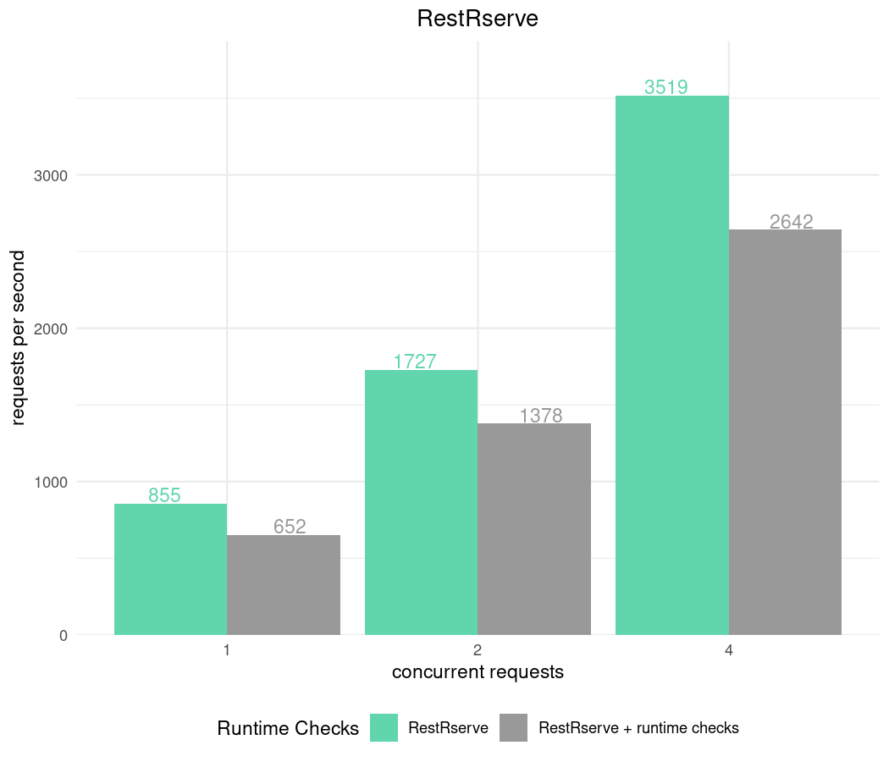
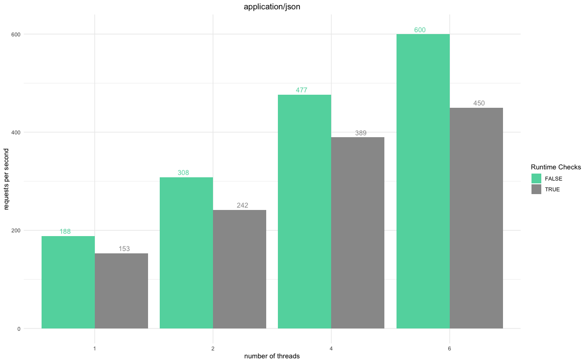

Benchmarks
Dmitriy Selivanov
02 March, 2020
Source:vignettes/benchmarks/Benchmarks.Rmd
Benchmarks.Rmd*All benchmarks below are done on a laptop with Intel i7-8850H CPU @ 2.60GHz - 6 cores, 12 threads.
There are many tools to benchmark HTTP API. We will use apib which is successor of a standard ab tool.
We will benchmark a very simple web service - it receives HTTP request at /fib?n=10 and answer with fibonacci number. 
Details and methodology
RestRserve application which implements it looks following:
bench_app = function(content_type = "text/plain") {
calc_fib = function(n) {
if (n < 0L) stop("n should be >= 0")
if (n == 0L) return(0L)
if (n == 1L || n == 2L) return(1L)
x = rep(1L, n)
for (i in 3L:n) x[[i]] = x[[i - 1]] + x[[i - 2]]
x[[n]]
}
library(RestRserve)
backend = BackendRserve$new()
app = Application$new(content_type = content_type)
app$logger$set_log_level("off")
app$add_get("/fib", FUN = function(request, response) {
n = as.integer(request$get_param_query("n"))
if (length(n) == 0L || is.na(n)) {
raise(HTTPError$bad_request())
}
response$set_body(list(answer = calc_fib(n)))
})
backend$start(app = app, http_port = 8080)
}Benchmarking Rserve backend
At the moment RestRserve supports single backend - Rserve.
Configurations:
-
RestRservecan utilize all CPU cores and process requests in parallel. We will use multiple number of threads to see how it affects performance. - During application
RestRservechecksRESTRSERVE_RUNTIME_ASSERTSenvironment variable. It controls the amount of input validationRestRserveperforms internally using checkmate package. Despite the fact that runtime checks comes with additional time overhead this variable is set toTRUEby default. We value correctness and robustness of the application at the first place. We will benchmark application with different values ofRESTRSERVE_RUNTIME_ASSERTSto see the difference.
Code below implements allows to test combinations options:
library(callr)
library(data.table)
parse_apib_results = function(x) {
csv_header = system2(command = "apib", args = "--header-line", stdout = T)
csv_header = strsplit(csv_header, ",", T)[[1]]
csv_header = c("n_threads", "runtime_checks", csv_header[-1])
if (length(x) == 1) x = paste0(x, "\n")
results = paste(x, collapse = "\n")
fread(results, col.names = csv_header)
}
run_apib = function(n_threads = c(1, 2, 4, 6), n_sec = 5, keep_alive = 1000, runtime_checks = "FALSE") {
results = character()
for (n_threads in n_threads) {
res = system2(
command = "apib",
args = sprintf("-c %d -d %d -k %d --csv-output http://localhost:8080/fib?n=10", n_threads, n_sec, keep_alive),
stdout = TRUE
)
results[[length(results) + 1]] = paste0(n_threads, ",", runtime_checks, res)
}
results
}
apib_bench = function(n_sec, content_type, keep_alive = 1000) {
results = character()
for (runtime_checks in c("TRUE", "FALSE")) {
rr = r_bg(bench_app, env = c("RESTRSERVE_RUNTIME_ASSERTS" = runtime_checks))
Sys.sleep(1)
results = c(results, run_apib(n_threads = c(1, 2, 4, 6), n_sec = n_sec, keep_alive = keep_alive, runtime_checks = runtime_checks))
rr$kill_tree()
}
parse_apib_results(results)
}No keep-alive
Keep in mind that creating new connections is quite expensive for any HTTP server. For RestRserve’s Rserve backend this is particularly true since for each new connection it forks a child process (which has relatively high cost). With other backends slow down might be less significant.

Nonetheless one can always put application behind proxy (such as HAproxy or nginx). It will maintain pool of connections to RestRserve and hence won’t suffer from creating new connections.
Comparison with Plumber
At the moment of writing the most popular way to develop a web service is to use plumber package. Unfortunately it doesn’t support parallel request processing. So will benchmark it with a single thread.
We need to write following code to plumber-fib.R:
echo '
# function to calc Fibonacci numbers
calc_fib = function(n) {
if (n < 0L) stop("n should be >= 0")
if (n == 0L) return(0L)
if (n == 1L || n == 2L) return(1L)
x = rep(1L, n)
for (i in 3L:n) x[[i]] = x[[i - 1]] + x[[i - 2]]
x[[n]]
}
#* Fibonacci numbers calculation
#* @param n Integer number
#* @get /fib
#* @serializer unboxedJSON
function(n) {
n = as.integer(n)
if (is.na(n)) {
stop("\"n\"must be integer number.")
}
calc_fib(n)
}' > plumber-fib.RStart with: